Solve Applications Modeled by Quadratic Equations
Solve Applications of the Quadratic Formula
We solved some applications that are modeled by quadratic equations earlier, when the only method we had to solve them was factoring. Now that we have more methods to solve quadratic equations, we will take another look at applications. To get us started, we will copy our usual Problem Solving Strategy here so we can follow the steps.
We have solved number applications that involved consecutive even integers and consecutive odd integers by modeling the situation with linear equations. Remember, we noticed each even integer is 2 more than the number preceding it. If we call the first one n, then the next one is . The next one would be or . This is also true when we use odd integers. One set of even integers and one set of odd integers are shown below.
Some applications of consecutive odd integers or consecutive even integers are modeled by quadratic equations. The notation above will be helpful as you name the variables.
The product of two consecutive odd integers is 195. Find the integers.
Solution
Solution
| Step 1. Read the problem. | ||
| Step 2. Identify what we are looking for. | We are looking for two consecutive odd integers. | |
| Step 3. Name what we are looking for. | Let the first odd integer. the next odd integer |
|
| Step 4. Translate into an equation. State the problem in one sentence. | "The product of two consecutive odd integers is 195." The product of the first odd integer and the second odd integer is 195. | |
| Translate into an equation | ||
| Step 5. Solve the equation. Distribute. | ||
| Subtract 195 to get the equation in standard form. | 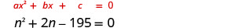 |
|
| Identify the a, b, c values. | ||
| Write the quadratic equation. | ||
| Then substitute in the values of a, b, c.. | ||
| Simplify. |
|
|
| Simplify the radical. | ||
| Rewrite to show two solutions. | ||
| Solve each equation. |
|
|
| There are two values of n that are solutions. This will give us two pairs of consecutive odd integers for our solution. | First odd integer next odd integer |
|
| First odd integer next odd integer |
||
|
Step 6. Check the answer. Do these pairs work? Are they consecutive odd integers? Is their product 195? |
|
|
| Step 7. Answer the question. | The two consecutive odd integers whose product is 195 are 13, 15, and −13, −15. | |
We will use the formula for the area of a triangle to solve the next example.
Recall that, when we solve geometry applications, it is helpful to draw the figure.
An architect is designing the entryway of a restaurant. She wants to put a triangular window above the doorway. Due to energy restrictions, the window can have an area of 120 square feet and the architect wants the width to be 4 feet more than twice the height. Find the height and width of the window.
Solution
Solution
|
Step 1. Read the problem. Draw a picture. |
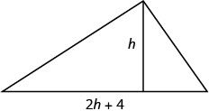 |
|
| Step 2. Identify what we are looking for. | We are looking for the height and width. | |
| Step 3. Name what we are looking for. | Let the height of the triangle. the width of the triangle |
|
| Step 4. Translate. | We know the area. Write the formula for the area of a triangle. |
|
| Step 5. Solve the equation. Substitute in the values. | ||
| Distribute. | ||
| This is a quadratic equation, rewrite it in standard form. | 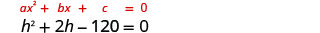 |
|
| Solve the equation using the Quadratic Formula. Identify the a, b, c values. | ||
| Write the quadratic equation. | ||
| Then substitute in the values of a, b, c.. | 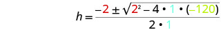 |
|
| Simplify. |
|
|
| Simplify the radical. | ||
| Rewrite to show two solutions. | 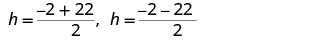 |
|
| Simplify. | ||
| Since h is the height of a window, a value of does not make sense. | ||
| The height of the triangle: The width of the triangle: |
||
| Step 6. Check the answer. Does a triangle with a height 10 and width 24 have area 120? Yes. | ||
| Step 7. Answer the question. | The height of the triangular window is 10 feet and the width is 24 feet. | |
Notice that the solutions were integers. That tells us that we could have solved the equation by factoring.
When we wrote the equation in standard form, , we could have factored it. If we did, we would have solved the equation .
In the two preceding examples, the number in the radical in the Quadratic Formula was a perfect square and so the solutions were rational numbers. If we get an irrational number as a solution to an application problem, we will use a calculator to get an approximate value.
The Pythagorean Theorem gives the relation between the legs and hypotenuse of a right triangle. We will use the Pythagorean Theorem to solve the next example.
Rene is setting up a holiday light display. He wants to make a ‘tree’ in the shape of two right triangles, as shown below, and has two 10-foot strings of lights to use for the sides. He will attach the lights to the top of a pole and to two stakes on the ground. He wants the height of the pole to be the same as the distance from the base of the pole to each stake. How tall should the pole be?
Solution
Solution
| Step 1. Read the problem. Draw a picture. | 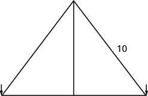 |
|
| Step 2. Identify what we are looking for. | We are looking for the height of the pole. | |
| Step 3. Name what we are looking for. | The distance from the base of the pole to either stake is the same as the height of the pole. Let the height of the pole. the distance from the pole to stake |
|
| Each side is a right triangle. We draw a picture of one of them. | 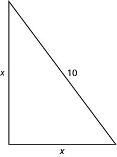 |
|
| Step 4. Translate into an equation. We can use the Pythagorean Theorem to solve for x. | ||
| Write the Pythagorean Theorem. | ||
| Step 5. Solve the equation. Substitute. | ||
| Simplify. | ||
| Divide by 2 to isolate the variable. | ||
| Simplify. | ||
| Use the Square Root Property. | ||
| Simplify the radical. | ||
| Rewrite to show two solutions. |
|
|
| Approximate this number to the nearest tenth with a calculator. | ||
|
Step 6. Check the answer. Check on your own in the Pythagorean Theorem. |
||
| Step 7. Answer the question. | The pole should be about 7.1 feet tall. | |
Mike wants to put 150 square feet of artificial turf in his front yard. This is the maximum area of artificial turf allowed by his homeowners association. He wants to have a rectangular area of turf with length one foot less than three times the width. Find the length and width. Round to the nearest tenth of a foot.
Solution
Solution
| Step 1. Read the problem. Draw a picture. | 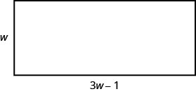 |
|
| Step 2. Identify what we are looking for. | We are looking for the length and width. | |
| Step 3. Name what we are looking for. | Let the width of the rectangle. the length of the rectangle |
|
|
Step 4. Translate into an equation. We know the area. Write the formula for the area of a rectangle. |
||
| Step 5. Solve the equation. Substitute in the values. | ||
| Distribute. | ||
| This is a quadratic equation, rewrite it in standard form. | ||
| Solve the equation using the Quadratic Formula. | ||
| Identify the a, b, c values. | 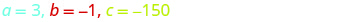 |
|
| Write the Quadratic Formula. | ||
| Then substitute in the values of a, b, c. | 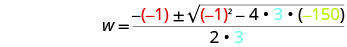 |
|
| Simplify. |
|
|
| Rewrite to show two solutions. | ||
| Approximate the answers using a calculator. We eliminate the negative solution for the width. |
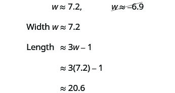 |
|
|
Step 6. Check the answer. Make sure that the answers make sense. |
||
| Step 7. Answer the question. | The width of the rectangle is approximately 7.2 feet and the length 20.6 feet. | |
The height of a projectile shot upwards is modeled by a quadratic equation. The initial velocity, , propels the object up until gravity causes the object to fall back down.
We can use the formula for projectile motion to find how many seconds it will take for a firework to reach a specific height.
A firework is shot upwards with initial velocity 130 feet per second. How many seconds will it take to reach a height of 260 feet? Round to the nearest tenth of a second.
Solution
Solution
| Step 1. Read the problem. | ||
| Step 2. Identify what we are looking for. | We are looking for the number of seconds, which is time. | |
| Step 3. Name what we are looking for. | Let the number of seconds. | |
| Step 4. Translate into an equation. | Use the formula. | |
|
Step 5. Solve the equation. We know the velocity is 130 feet per second. |
||
| The height is 260 feet. Substitute the values. | ||
| This is a quadratic equation, rewrite it in standard form. | ||
| Solve the equation using the Quadratic Formula. | ||
| Identify the a, b, c values. | ||
| Write the Quadratic Formula. | ||
| Then substitute in the values of a, b, c. | 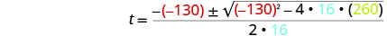 |
|
| Simplify. |
|
|
| Rewrite to show two solutions. | ||
| Approximate the answers with a calculator. | seconds, | |
|
Step 6. Check the answer. The check is left to you. |
||
| Step 7. Answer the question. | The firework will go up and then fall back down. As the firework goes up, it will reach 260 feet after approximately 3.6 seconds. It will also pass that height on the way down at 4.6 seconds. |
|
Key Concepts
-
Area of a Triangle For a triangle with base, , and height, , the area, , is given by the formula:
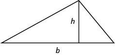
-
Pythagorean Theorem In any right triangle, where and are the lengths of the legs, and is the length of the hypothenuse,
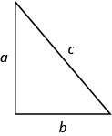
-
Projectile motion The height in feet, , of an object shot upwards into the air with initial velocity, , after seconds can be modeled by the formula:
Practice Makes Perfect
Solve Applications of the Quadratic Formula
In the following exercises, solve by using methods of factoring, the square root principle, or the Quadratic Formula. Round your answers to the nearest tenth.
The product of two consecutive odd numbers is 255. Find the numbers.
Solution
Two consecutive odd numbers whose product is 255 are 15 and 17, and and .
The product of two consecutive even numbers is 360. Find the numbers.
The product of two consecutive even numbers is 624. Find the numbers.
Solution
Two consecutive even numbers whose product is 624 are 24 and 26, and and .
The product of two consecutive odd numbers is 1023. Find the numbers.
The product of two consecutive odd numbers is 483. Find the numbers.
Solution
Two consecutive odd numbers whose product is 483 are 21 and 23, and and .
The product of two consecutive even numbers is 528. Find the numbers.
A triangle with area 45 square inches has a height that is two less than four times the width. Find the height and width of the triangle.
Solution
The width of the triangle is 5 inches and the height is 18 inches.
The width of a triangle is six more than twice the height. The area of the triangle is 88 square yards. Find the height and width of the triangle.
The hypotenuse of a right triangle is twice the length of one of its legs. The length of the other leg is three feet. Find the lengths of the three sides of the triangle. Round to the nearest tenth.
Solution
The leg of the right triangle is 1.7 feet and the hypotenuse is 3.4 feet.
The hypotenuse of a right triangle is 10 cm long. One of the triangle’s legs is three times the length of the other leg. Find the lengths of the three sides of the triangle. Round to the nearest tenth.
A farmer plans to fence off sections of a rectangular corral. The diagonal distance from one corner of the corral to the opposite corner is five yards longer than the width of the corral. The length of the corral is three times the width. Find the length of the diagonal of the corral. Round to the nearest tenth.
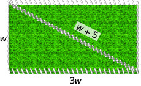
Solution
The length of the diagonal of the fence is 7.3 yards.
Nautical flags are used to represent letters of the alphabet. The flag for the letter O consists of a yellow right triangle and a red right triangle which are sewn together along their hypotenuse to form a square. The adjoining side of the two triangles is three inches longer than a side of the flag. Find the length of the side of the flag.
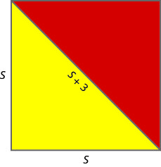
The length of a rectangular driveway is five feet more than three times the width. The area is 350 square feet. Find the length and width of the driveway.
Solution
The width of the driveway is 10 feet and its length is 35 feet.
A rectangular lawn has area 140 square yards. Its width that is six less than twice the length. What are the length and width of the lawn?
A firework rocket is shot upward at a rate of 640 ft/sec. Use the projectile formula to determine when the height of the firework rocket will be 1200 feet.
Solution
The rocket will reach 1,200 feet on its way up in 2 seconds and on the way down in 38 seconds.
An arrow is shot vertically upward at a rate of 220 feet per second. Use the projectile formula to determine when height of the arrow will be 400 feet.
Everyday Math
A bullet is fired straight up from a BB gun with initial velocity 1120 feet per second at an initial height of 8 feet. Use the formula to determine how many seconds it will take for the bullet to hit the ground. (That is, when will ?)
Solution
70 seconds
A city planner wants to build a bridge across a lake in a park. To find the length of the bridge, he makes a right triangle with one leg and the hypotenuse on land and the bridge as the other leg. The length of the hypotenuse is 340 feet and the leg is 160 feet. Find the length of the bridge.
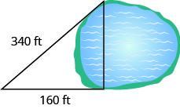
Writing Exercises
Make up a problem involving the product of two consecutive odd integers. Start by choosing two consecutive odd integers. ⓐ What are your integers? ⓑ What is the product of your integers? ⓒ Solve the equation , where is the product you found in part (b). ⓓ Did you get the numbers you started with?
Solution
ⓐ answers will vary
ⓑ answers will vary ⓒ answers will vary ⓓ answers will vary
Make up a problem involving the product of two consecutive even integers. Start by choosing two consecutive even integers. ⓐ What are your integers? ⓑ What is the product of your integers? ⓒ Solve the equation , where is the product you found in part (b). ⓓ Did you get the numbers you started with?
Self Check
ⓐ After completing the exercises, use this checklist to evaluate your mastery of the objectives of this section.
ⓑ On a scale of 1–10, how would you rate your mastery of this section in light of your responses on the checklist? How can you improve this?